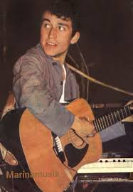
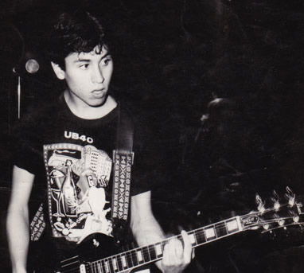
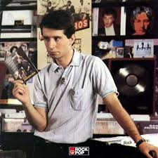
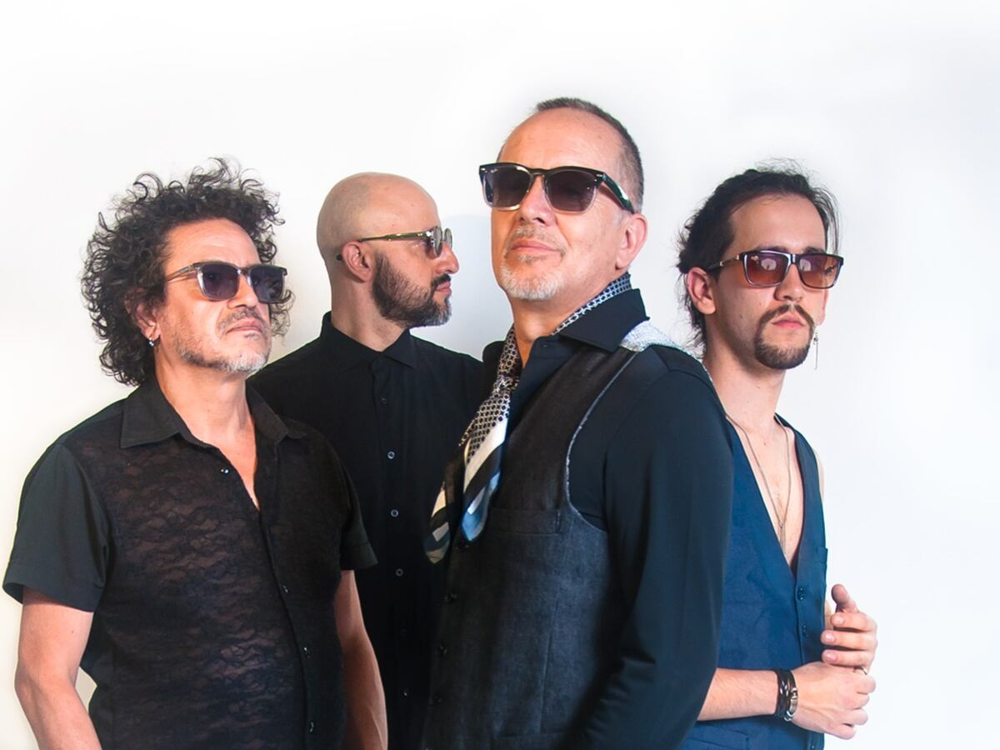

Jorge González fue el vocalista principal y líder de la banda.
También fue el compositor de la mayoría de sus canciones.
Su estilo directo y crítico marcó la identidad de Los Prisioneros.

Foto de Jorge González
Claudio Narea
Claudio Narea fue el guitarrista de la banda.
Su forma de tocar aportó mucho al sonido característico del grupo.
También participó en la creación de varias canciones.

Foto de Claudio Narea
Miguel Tapia
Miguel Tapia fue el baterista de la banda.
Su ritmo fue fundamental para la base musical de Los Prisioneros.
También participó como corista en varias canciones.

Foto de Miguel Tapia
Otros integrantes
A lo largo de su historia, la banda contó con la participación de otros músicos.
Estos artistas ayudaron en presentaciones y grabaciones en distintas etapas.
Aunque no fueron fundadores, aportaron al desarrollo del grupo.

Foto con Otros Integrantes
Roles en la banda
Cada integrante tenía un rol importante dentro del grupo.
Jorge González era el vocalista y compositor, Claudio Narea el guitarrista
y Miguel Tapia el baterista.
Gracias a este trabajo en equipo lograron crear su estilo único.